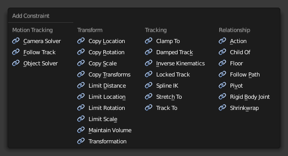

Adding/Removing a Constraint¶
- To add a constraint in the Constraints Panel:
- Click on the “Add Constraint” menu.

- To add a constraint in the 3D View:
- Select the object you would like to constrain.
Press
Ctrl-Shift-Cand choose a constraint from the pop-up menu. If the chosen constraint needs a target, Blender will add an empty automatically as the target and position it at the center of the constrained object. - To add a constraint in the 3D View and simultaneously give it a target:
- Select the target first and then shift-select the object you would like to constrain.
Press
Ctrl-Shift-Cand choose a constraint from the pop-up menu.
注解
When using a bone from another armature as the target for a constraint, Ctrl-Shift-C
will look inside the non-active armature and use its active bone,
provided that armature is in Pose Mode.
- To remove a constraint:
- Click on the “X” button in the header.
- To remove all constraints from all selected object(s):
- Click in the 3D View Header.
- or (for bone constraints).
- or press
Ctrl-Alt-C.